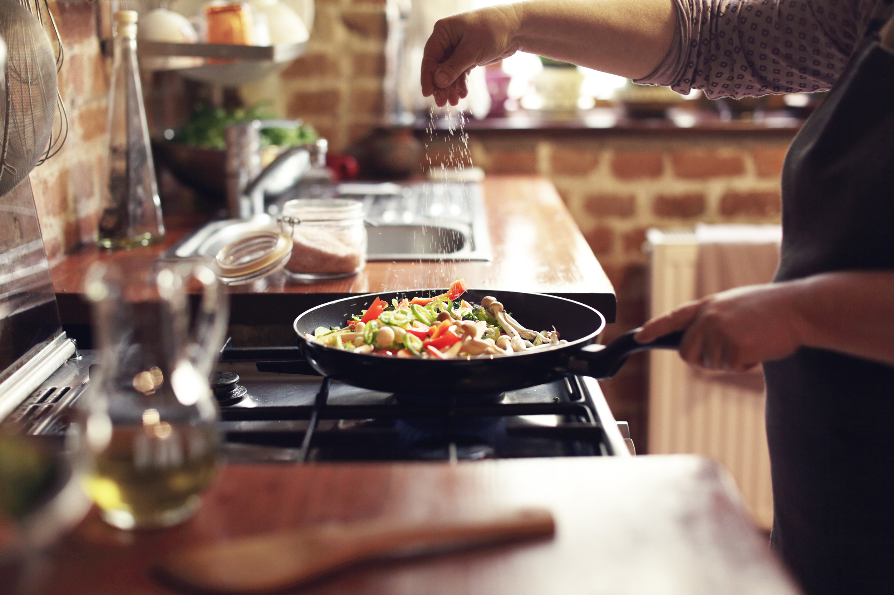

Cooking
I find joy in experimenting with flavors and creating delicious dishes from the comfort of my home. I like most cooking soups, traditional dishes, as well and deserts.
Being a Computer Science teacher, my mission is to make the complex world of algorithms, coding, and technology
not just
understandable but exciting! I believe in hands-on learning, where students actively engage with programming
languages and problem-solving.
On this page:
| Professional Background |
Teaching Philosophy |
Beyond the Classroom |
Master's Degree in Software Engineering (in English)
Babes-Bolyai University, Faculty of Mathematics and Computer Science
[2022 - 2024]
Location: Cluj-Napoca, Romania
Bachelor's Degree in Computer Science (in English)
Babes-Bolyai University, Faculty of Mathematics and Computer Science
[2019 - 2022]
Location: Cluj-Napoca, Romania
High School Diploma
Mihai Eminescu National College
[2015 - 2019]
Location: Botosani, Romania
Computer Science Teacher
Babes-Bolyai University, Faculty of Mathematics and Computer Science, Computer Science Department
[2024 - Current]
Location: Cluj-Napoca, Romania
Software Engineer
Montran Romania
[2022 - Current]
Location: Cluj-Napoca, Romania
Students' Scientific Communication Session
Technical Univeristy of Cluj-Napoca
2022
Paper: Birds Species Classification From Images Using Transfer Learning
Volunteer as Artificial Intelligence and Machine Learning Mentor
Dalia's Book Organization
2021
I believe in creating an engaging and inclusive learning environment where students feel empowered to explore, question, and discover their passions.
Education should be a collaborative journey; my classroom is a space where students are not just passive listeners of knowledge but active participants in their own learning.
Discovering the Person Behind the Teacher: Hobbies Edition! ⭐
Teaching isn't just about textbooks and lesson plans - it's about bringing a bit of yourself into the classroom. So, let me share a glimpse into my world outside of academia. When I'm not immersed in the educational world, you'll often find me indulging in a variety of hobbies that bring joy, relaxation, and a touch of creativity to my life.
I find joy in experimenting with flavors and creating delicious dishes from the comfort of my home. I like most cooking soups, traditional dishes, as well and deserts.
I love capturing special moments with my camera. Whether it's a beautiful sunset or a funny moment with friends I enjoy turning ordinary things into awesome memories.
See MoreI'm an avid reader, exploring various genres from fiction to educational literature. I like to catch up with the latest results from various articles, and also to relax by reading several pages at the end of the long day.
Meet Bita, my furry best friend: